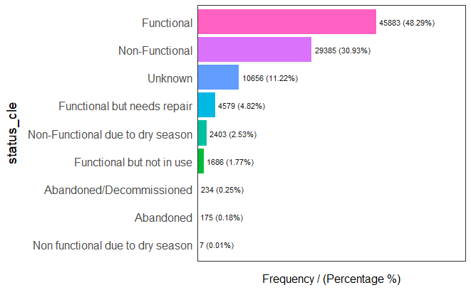
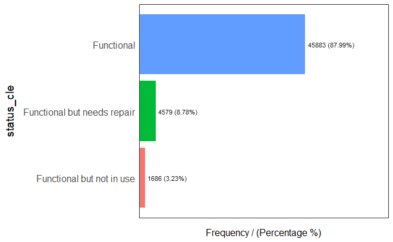
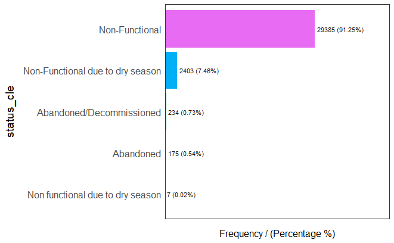
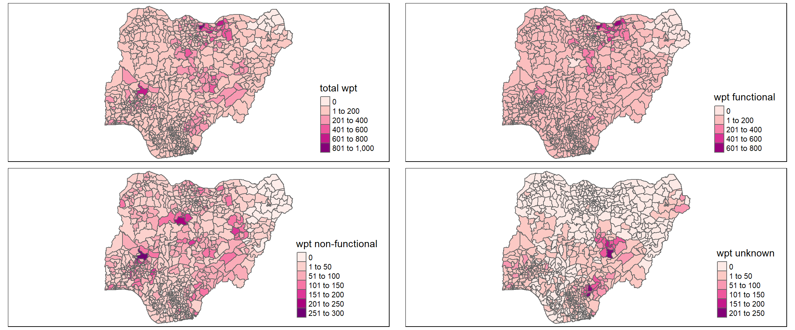

Press to toggle code
pacman::p_load(sf, tidyverse, tmap, funModeling, sfdep)This is a direct reproduction of In-class Exercise 2 of our class ISSS624: Geospatial Analytics and Applications as taught by Prof. Kam Tin Seong. It is also a precursor to Take-home Exercise 1.
NEW LIBRARY UNLOCKED: funModeling
This is a package used to easily do Exploratory Data Analysis!
NEW LIBRARY UNLOCKED: sfdep
This package builds on spdep package for spatial dependence by creating an sf and tidyverse friendly interface to the package as well as introduces new functionalities that are not present in spdep.
The code chunk below imports water point data from geo_export and filters it to those in Nigera using filter().
The code chunk below is used to save the waterpoint data to an RDS file.
NEW FUNCTION UNLOCKED: write_rds()
Sometimes we deal with very large datasets. In the context of this class, we have limitations as to what we can upload to github. One way to reduce the the size of our source file is by creating RDS files which are native to R and serve as a way to save our dataframes to a file. This makes sharing the used wranggled dataset easier as well.
This function write_rds() takes in two arguments, one is the dataframe to be saved and the next is the file path of the desired RDS file.
The counterpart `read_rs() which will appear later is used to read the RDS file.
The code chunk below loads in the shapefile of Nigeria’s LGA boundaries into the R environment.
The code chunk below imports the RDS file made earlier into the R environment. It also replaces all NA values under the 'status_cle' column into “Unknown” using the mutate() function.
The code chunk below makes use of the funModeling package’s freq() function to easily create a bar chart of all the values under 'status_cle' to easily visualize the distribution.

The code chunk below extracts all the records with 'status_cle' values set to “Functional”, “Functional but not in use”, and “Functional but needs repair” and saves it to a dataframe ‘wpt_functional’.
Once again we use the freq() to see the distribution of “Functional” water points.

Similar to the code chunk above, the one below extracts all the records with 'status_cle' values set to “Abandoned/Decommissioned”, “Abandoned”, “Non-Functional”, “Non functional due to dry season”, and “Non-Functional due to dry season” then saves it to a dataframe ‘wpt_nonfunctional’.
And again, we use the freq() funtion to see the distribution of “Non-Functional” water points.

Lastly, we use the same filter() function to extract all the records with “Unknown” 'status_cle' values.
The code chunk below regionalizes the data by finding the intersections between the different water point records (as point data) and the LGA boundaries (as polygons) using st_intersects(). The function lengths() gets the total number or sum of those points that intersect with the polygons.
nga_wp <- nga %>%
mutate(`total wpt` = lengths(
st_intersects(nga, wp_nga))) %>%
mutate(`wpt functional` = lengths(
st_intersects(nga, wpt_functional))) %>%
mutate(`wpt non-functional` = lengths(
st_intersects(nga, wpt_nonfunctional))) %>%
mutate(`wpt unknown` = lengths(
st_intersects(nga, wpt_unknown)))The resulting dataframe will contain new columns 'total wpt' (total count of water points in LGA), 'wpt functional' (total count of functional water points in LGA), 'wpt non-functional' (total count of non-functional water points in LGA) and 'wpt unknown' (total count of unknown status water points in LGA).
It would not be fair to compare counts between smaller and larger regions. In order to have a more accurate representation, we get the ratios of functional and non-functional water points. The code chunk below adds new columns with the functional and non-functional water point percentage.
Now that we’ve created and manipulated the dataset we are going to use write_rds() again to save the dataframe into an RDS file.
After that, we can use read_rds() to import the dataframe back into the R environment.
Using qtm() we can easily view the spatial distributions of all the statuses and total water points.
total <- qtm(nga_wp, "total wpt", fill.palette = "RdPu")
wp_functional <- qtm(nga_wp, "wpt functional", fill.palette = "RdPu")
wp_nonfunctional <- qtm(nga_wp, "wpt non-functional", fill.palette = "RdPu")
unknown <- qtm(nga_wp, "wpt unknown", fill.palette = "RdPu")
tmap_arrange(total, wp_functional, wp_nonfunctional, unknown, ncol=2)
---
title: "In-class Exercise 2 - Do functionally similar water points positively co-occur in Nigeria?"
editor: visual
execute:
warning: FALSE
---
## Overview
This is a direct reproduction of [In-class Exercise 2](https://isss624.netlify.app/in-class_ex/in-class_ex2/in-class_ex2 "Birds of a feather flock together: Do functionally similar water points positively co-occur in Nigeria?") of our class ISSS624: Geospatial Analytics and Applications as taught by Prof. Kam Tin Seong. It is also a precursor to [Take-home Exercise 1](https://isss624-ay2022-23nov.netlify.app/take-home_ex01 "Take-home Exercise 1: Geospatial Analytics for Social Good").
## Getting Started
### Loading the required packages
```{r}
pacman::p_load(sf, tidyverse, tmap, funModeling, sfdep)
```
::: {.callout-important icon="false"}
## 🎮 LEVEL UP!
**NEW LIBRARY UNLOCKED: [`funModeling`](https://cran.r-project.org/web/packages/funModeling/index.html)**
This is a package used to easily do Exploratory Data Analysis!
**NEW LIBRARY UNLOCKED: [`sfdep`](https://github.com/JosiahParry/sfdep)**
This package builds on spdep package for spatial dependence by creating an **`sf`** and **`tidyverse`** friendly interface to the package as well as introduces new functionalities that are not present in **`spdep`**.
:::
### Importing geospatial data
#### Importing water point geospatial data
The code chunk below imports water point data from geo_export and filters it to those in Nigera using `filter()`.
```{r}
#| eval: false
wp <- st_read(dsn = "data",
layer = "geo_export",
crs = 4326) %>%
filter(clean_coun == "Nigeria")
```
The code chunk below is used to save the waterpoint data to an RDS file.
```{r}
#| eval: false
write_rds(wp, "data/wp_nga.rds")
```
::: {.callout-note icon="false"}
## 🎮 LEVEL UP!
**NEW FUNCTION UNLOCKED: `write_rds()`**
Sometimes we deal with very large datasets. In the context of this class, we have limitations as to what we can upload to github. One way to reduce the the size of our source file is by creating RDS files which are native to R and serve as a way to save our dataframes to a file. This makes sharing the used wranggled dataset easier as well.
This function `write_rds()` takes in two arguments, one is the dataframe to be saved and the next is the file path of the desired RDS file.
The counterpart \``read_rs()` which will appear later is used to read the RDS file.
:::
#### Importing Nigeria LGA boundary data
The code chunk below loads in the shapefile of Nigeria's LGA boundaries into the R environment.
```{r}
#| eval: false
nga <- st_read(dsn = "data",
layer = "geoBoundaries-NGA-ADM2",
crs = 4326)
```
## Data Wrangling
### Recoding the NA values into a string
The code chunk below imports the RDS file made earlier into the R environment. It also replaces all NA values under the `'status_cle'` column into "Unknown" using the `mutate()` function.
```{r}
#| eval: false
wp_nga <- read_rds("data/wp_nga.rds") %>%
mutate(status_cle = replace_na(status_cle, "Unknown"))
```
The code chunk below makes use of the **`funModeling`** package's `freq()` function to easily create a bar chart of all the values under `'status_cle'` to easily visualize the distribution.
```{r}
#| eval: false
freq(data=wp_nga,
input = 'status_cle')
```
{fig-align="center"}
### Extracting water point data
#### Functional water points
The code chunk below extracts all the records with `'status_cle'` values set to "Functional", "Functional but not in use", and "Functional but needs repair" and saves it to a dataframe '*wpt_functional*'.
```{r}
#| eval: false
wpt_functional <- wp_nga %>%
filter(status_cle %in%
c("Functional",
"Functional but not in use",
"Functional but needs repair"))
```
Once again we use the `freq()` to see the distribution of "Functional" water points.
```{r}
#| eval: false
freq(data=wpt_functional,
input = 'status_cle')
```
{fig-align="center"}
#### Non-functional water points
Similar to the code chunk above, the one below extracts all the records with `'status_cle'` values set to "Abandoned/Decommissioned", "Abandoned", "Non-Functional", "Non functional due to dry season", and "Non-Functional due to dry season" then saves it to a dataframe '*wpt_nonfunctional*'.
```{r}
#| eval: false
wpt_nonfunctional <- wp_nga %>%
filter(status_cle %in%
c("Abandoned/Decommissioned",
"Abandoned",
"Non-Functional",
"Non functional due to dry season",
"Non-Functional due to dry season"))
```
And again, we use the `freq()` funtion to see the distribution of "Non-Functional" water points.
```{r}
#| eval: false
freq(data=wpt_nonfunctional,
input = 'status_cle')
```
{fig-align="center"}
#### Unknown status water points
Lastly, we use the same `filter()` function to extract all the records with "Unknown" `'status_cle'` values.
```{r}
#| eval: false
wpt_unknown <- wp_nga %>%
filter(status_cle == "Unknown")
```
### Performing Point-in-Polygon count
The code chunk below regionalizes the data by finding the intersections between the different water point records (as point data) and the LGA boundaries (as polygons) using `st_intersects()`. The function `lengths()` gets the total number or sum of those points that intersect with the polygons.
```{r}
#| eval: false
nga_wp <- nga %>%
mutate(`total wpt` = lengths(
st_intersects(nga, wp_nga))) %>%
mutate(`wpt functional` = lengths(
st_intersects(nga, wpt_functional))) %>%
mutate(`wpt non-functional` = lengths(
st_intersects(nga, wpt_nonfunctional))) %>%
mutate(`wpt unknown` = lengths(
st_intersects(nga, wpt_unknown)))
```
The resulting dataframe will contain new columns `'total wpt'` (total count of water points in LGA), `'wpt functional'` (total count of functional water points in LGA), `'wpt non-functional'` (total count of non-functional water points in LGA) and `'wpt unknown'` (total count of unknown status water points in LGA).
### Deriving new variables
It would not be fair to compare counts between smaller and larger regions. In order to have a more accurate representation, we get the ratios of functional and non-functional water points. The code chunk below adds new columns with the functional and non-functional water point percentage.
```{r}
#| eval: false
nga_wp <- nga_wp %>%
mutate(pct_functional = `wpt functional`/`total wpt`) %>%
mutate(`pct_non-functional` = `wpt non-functional`/`total wpt`)
```
### Saving the analytical data table
Now that we've created and manipulated the dataset we are going to use `write_rds()` again to save the dataframe into an RDS file.
```{r}
#| eval: false
write_rds(nga_wp, "data/nga_wp.rds")
```
After that, we can use `read_rds()` to import the dataframe back into the R environment.
```{r}
nga_wp <- read_rds("data/nga_wp.rds")
```
## Visualizing Spatial Distribution
Using `qtm()` we can easily view the spatial distributions of all the statuses and total water points.
```{r}
#| fig-width: 12
total <- qtm(nga_wp, "total wpt", fill.palette = "RdPu")
wp_functional <- qtm(nga_wp, "wpt functional", fill.palette = "RdPu")
wp_nonfunctional <- qtm(nga_wp, "wpt non-functional", fill.palette = "RdPu")
unknown <- qtm(nga_wp, "wpt unknown", fill.palette = "RdPu")
tmap_arrange(total, wp_functional, wp_nonfunctional, unknown, ncol=2)
```